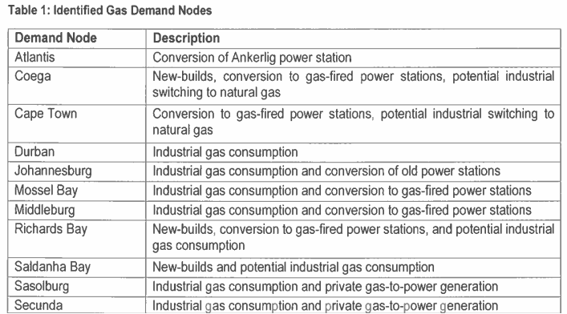
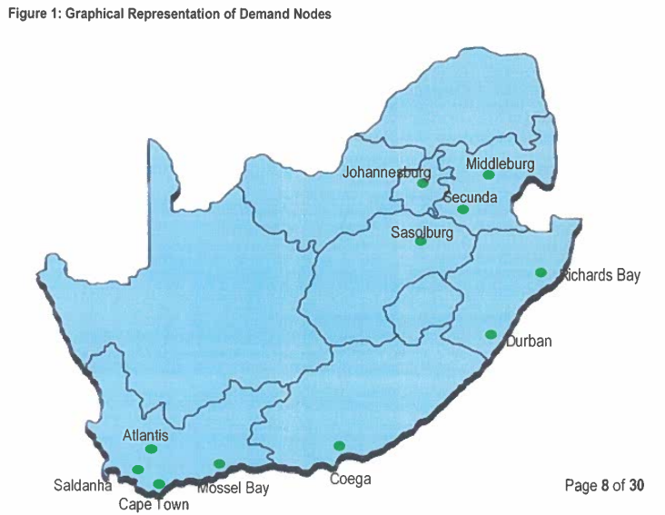

The South African Gas Master Plan (GMP) is a strategic policy framework published by the Department of Mineral Resources and Energy (DMRE) in Government Gazette No. 50569 on 26 April 2024. Its purpose: ensure security of gas supply by diversifying sources and guiding the development of natural gas infrastructure, markets, and policy within the national energy mix.
The GMP models the likely development of the gas sector based on projected demand as the country transitions away from coal. It is built around three core pillars:
The plan covers the complete gas topology: upstream (exploration and production), midstream (transmission pipelines, LNG terminals, storage), and downstream (distribution networks, gas-to-power, industrial off-take, commercial and residential use). It explicitly ties gas development to South Africa's Just Transition framework and hydrogen strategy, positioning natural gas as a bridge fuel between coal-dominant electricity and a future low-carbon system.
South Africa is a marginal gas producer and a net gas importer. The current gas economy is small relative to coal but strategically important for certain industrial users (Sasol, petrochemicals, refineries, fertiliser).
The GMP identifies priority demand nodes across South Africa, clustered into three tiers based on existing industrial gas consumption, power generation potential, and proximity to planned import corridors:
| Tier | Demand Node | Province | Primary Demand Drivers | Estimated Peak Demand (PJ/yr) |
|---|---|---|---|---|
| 1 | Gauteng Industrial Complex | Gauteng | Petrochemicals (Sasol), power generation, industrial heating, ferroalloys | 150–200 |
| 1 | Richards Bay | KwaZulu-Natal | LNG import terminal potential, smelters (BHP Billiton), industrial park, power gen | 80–120 |
| 1 | Coega / Ngqura (Port Elizabeth / Gqeberha) | Eastern Cape | LNG import terminal, Coega IDZ industrial users, gas-to-power, existing PetroSA link | 70–100 |
| 1 | Mossel Bay / Petrosa GTL | Western Cape | Gas-to-liquids refinery, declining domestic fields, potential LNG backfill | 60–90 |
| 2 | Durban / South Basin | KwaZulu-Natal | Industrial zone, refineries (Engen, Sapref), paper & pulp, chemical manufacturing | 50–70 |
| 2 | Vaal Triangle / Sasolburg | Free State | Petrochemicals, fertiliser, industrial heating | 40–60 |
| 2 | eMalahleni / Witbank | Mpumalanga | Gas-to-power replacing coal-fired stations, mining and industrial users | 40–60 |
| 2 | Steelpoort / Burgersfort (platinum belt) | Limpopo / Mpumalanga | PGM smelters, ferrochrome, platinum group metals processing | 30–50 |
| 3 | Western Cape (Cape Town / Saldanha) | Western Cape | Industrial users, gas-to-power potential, steel (Saldanha), manufacturing | 30–50 |
| 3 | Phalaborwa / Limpopo | Limpopo | Mining (Palabora), smelting, industrial heating | 20–40 |
Source: GMP Chapter 3 — Demand Analysis and Demand Node Identification. Peak demand estimates are indicative ranges from the plan's modelling scenarios.

The GMP models a diversified supply portfolio across three categories, recognising that no single source can meet projected demand.

The GMP proposes a phased corridor approach to infrastructure development to avoid building stranded assets. Infrastructure is sequenced so that the highest-demand, lowest-cost corridors are built first.
| Component | Estimated Cost (R billion) | Timeline |
|---|---|---|
| Ngqura LNG terminal (FSRU-based, 2 MTPA) | 15–20 | 2025–2028 |
| Richards Bay LNG terminal (FSRU-based, 2–3 MTPA) | 15–25 | 2027–2030 |
| Corridor A pipeline (Coega→Mossel Bay→Gauteng) | 20–30 | 2025–2030 |
| Corridor B pipeline (Richards Bay→Gauteng) | 12–18 | 2027–2032 |
| Mozambique second pipeline (Rovuma→SA) | 35–50 | 2030–2035 (conditional) |
| Gas storage facilities (depleted field / salt cavern) | 5–10 | 2030+ |
Source: GMP Chapter 5 — Infrastructure Development Plan. Costs are 2024 estimates, not inflation-adjusted.
The GMP models four demand scenarios for natural gas to 2050, driven by different assumptions about GDP growth, electrification, industrialisation, and decarbonisation ambition:
| Scenario | Assumptions | Peak Gas Demand (PJ/yr) | Implied LNG Import (MTPA) | Gas-to-Power GW |
|---|---|---|---|---|
| High Growth / High Gas | GDP +3%/yr, rapid industrialisation, gas replaces coal in power and industry, hydrogen exports develop | 1,200–1,500 | ~20–25 MTPA | 15–20 GW |
| Moderate Base Case | GDP +2%/yr, moderate industrial growth, gas gains share but coal remains significant to 2035 | 600–900 | ~10–15 MTPA | 8–12 GW |
| Low Demand | GDP +1%/yr, limited industrialisation, rapid renewables deployment, low gas adoption | 300–500 | ~5–8 MTPA | 3–6 GW |
| Accelerated Decarbonisation | Rapid renewables + storage + green hydrogen, gas used only as backup/peaking, early coal phase-out | 150–300 | < 5 MTPA | 1–3 GW (peaker) |
The plan's Base Case (considered most likely by the DMRE) projects 600–900 PJ/yr of gas demand by 2040, requiring 10–15 MTPA of LNG and 8–12 GW of gas-to-power capacity. This is roughly a 5–7x increase over current gas consumption.
Source: GMP Chapter 4 — Demand Modelling and Scenario Analysis. PJ = petajoules (1 PJ = ~0.028 bcm of natural gas). MTPA = million tonnes per annum of LNG.
The GMP identifies several regulatory reforms needed to enable private investment in the gas sector at the scale required.
| Institution | Role in Gas Sector |
|---|---|
| DMRE | Policy formulation, exploration & production rights, LNG import licensing, Ministerial Determinations for gas-to-power |
| NERSA | Pipeline tariff regulation, gas trading & licensing, dispute resolution for TPA, price regulation (if deemed necessary) |
| CCS (Competition Commission) | Competition oversight in gas markets, addressing Sasol-Gas vertical integration dominance |
| IPPO / DMRE IPP Office | Procurement of gas-to-power IPPs through bid windows (modelled on REIPPPP) |
| Eskom (gen / NTCSA) | Potential anchor off-taker for gas-to-power (replacement of decommissioned coal stations) and system operator for dispatchable gas generation |
| Full title | Gas Master Plan 2024 (Draft) |
|---|---|
| Gazette number | Government Gazette No. 50569, 26 April 2024 |
| Issued by | Department of Mineral Resources and Energy (DMRE) |
| Gazette notice | Notice 4760 of 2024 |
| Public comment deadline | 15 June 2024 |
| Status | Draft — not yet finalised as of mid-2025 |
| Download | Official PDF (gov.za) or local copy |
Note: The GMP is a strategic policy framework, not a detailed project implementation plan. It identifies corridors, demand nodes, and regulatory reforms, but does not contain binding commitments, completed feasibility studies, or guaranteed timelines for specific projects. Individual projects will require separate feasibility studies, environmental impact assessments, FID, and procurement processes.